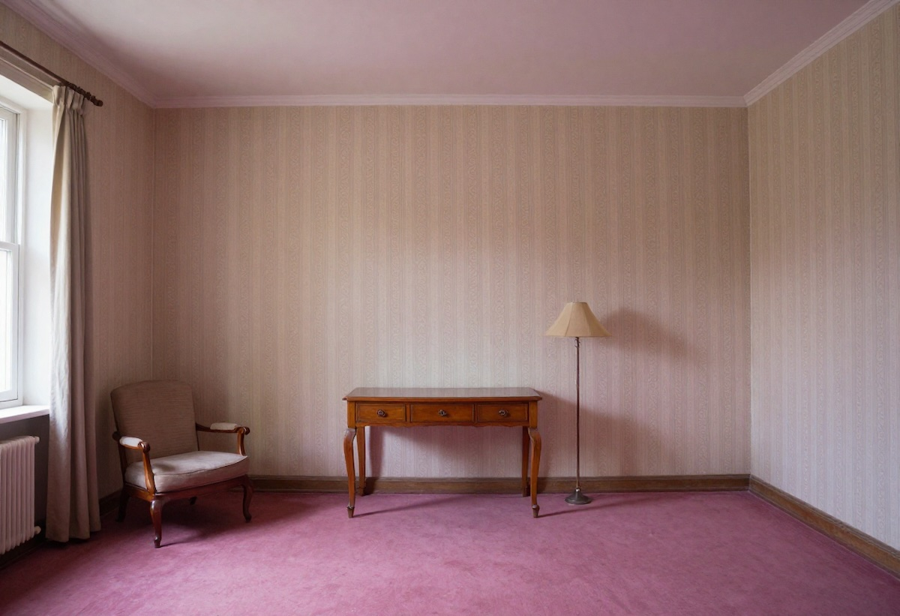

Rüyada Aynı Yeri Tekrar Tekrar Görmek Ne Anlama Gelir?
Rüyalar, bilinçaltımızın bize mesajlar ilettiği gizemli dünyalardır. Bazen rüyalarımızda aynı mekânı defalarca gördüğümüzü fark ederiz. Bir ev, bir sokak, bir okul ya da tamamen hayali bir yer… Peki, bu tekrar eden rüyalar ne anlama gelir? Hayatımızda gerçekten bir zaman döngüsüne mi sıkıştık?
Rüyalarda Tekrar Eden Mekânların Anlamı
Rüyalarda sürekli aynı mekânı görmek, genellikle bilinçaltımızın bize vermeye çalıştığı bir mesajın göstergesidir. İşte en yaygın nedenleri:
- Çözülmemiş Bir Mesele: Bilinçaltımız, çözülmemiş duygusal veya zihinsel sorunlarımızı bize göstermek için tekrar eden rüyalara başvurabilir. Özellikle geçmişte yaşadığımız travmatik olaylar ya da içimizde bastırdığımız duygular, belirli bir mekân sembolüyle rüyalarımıza yansıyabilir.
- Hayatta Bir Döngüye Sıkışmak: Gerçek yaşamda sürekli aynı sorunlarla karşılaşıyor, benzer hataları tekrarlıyor musun? Rüyada aynı yeri görmek, hayatında farkına varmadığın bir döngüye girdiğine işaret edebilir. Bu durum genellikle kişinin iş, ilişkiler veya kişisel gelişim alanlarında değişim yapması gerektiğini gösterir.
- Geçmişe Bağlı Kalmak: Rüyanda sürekli eski okulunu, eski mahalleni veya eski bir evini mi görüyorsun? Bu, geçmişe duyduğun özlemden kaynaklanıyor olabilir. Bilinçaltın, sana geçmişteki bir anıyı, tamamlanmamış bir duyguyu veya bir dersi hatırlatmaya çalışıyor olabilir.
Bu Döngüden Çıkmak İçin Ne Yapabilirsin?
Eğer sürekli aynı mekânı gördüğün rüyalar seni rahatsız etmeye başladıysa, bu döngüden çıkmak için şu adımları deneyebilirsin:
- Rüya Günlüğü Tut: Rüyalarını yazmak, tekrar eden mekânlar ve olaylar hakkında daha fazla farkındalık kazanmanı sağlar.
- Hayatını Gözden Geçir: Günlük yaşamında sürekli tekrarladığın hatalar ya da çözülmemiş sorunlar var mı? Bunları belirleyerek değişim sürecini başlatabilirsin.
- Yeni Deneyimler Edin: Eğer monoton bir rutine sıkıştığını hissediyorsan, yeni şeyler denemek, seyahat etmek veya farklı bir hobi edinmek rüyalarının değişmesine yardımcı olabilir.
- Profesyonel Destek Al: Eğer bu rüyalar seni rahatsız edecek seviyeye ulaştıysa, bir terapist veya rüya analisti ile görüşmek faydalı olabilir.
Sonuç
Rüyada aynı mekânı tekrar tekrar görmek, bilinçaltının sana önemli bir mesaj vermeye çalıştığının bir işareti olabilir. Hayatında bir döngüye mi sıkıştın? Belki de farkında olmadan çözülmeyi bekleyen bir konu var. Rüyalarını dikkatle analiz ederek ve hayatına bilinçli bir gözle bakarak, bu döngüyü kırabilir ve kendini daha özgür hissedebilirsin.
Sen de rüyalarında sürekli aynı mekânı gördüğün oldu mu? Deneyimlerini yorumlarda paylaşarak bu konuda birlikte daha derinlemesine konuşabiliriz!